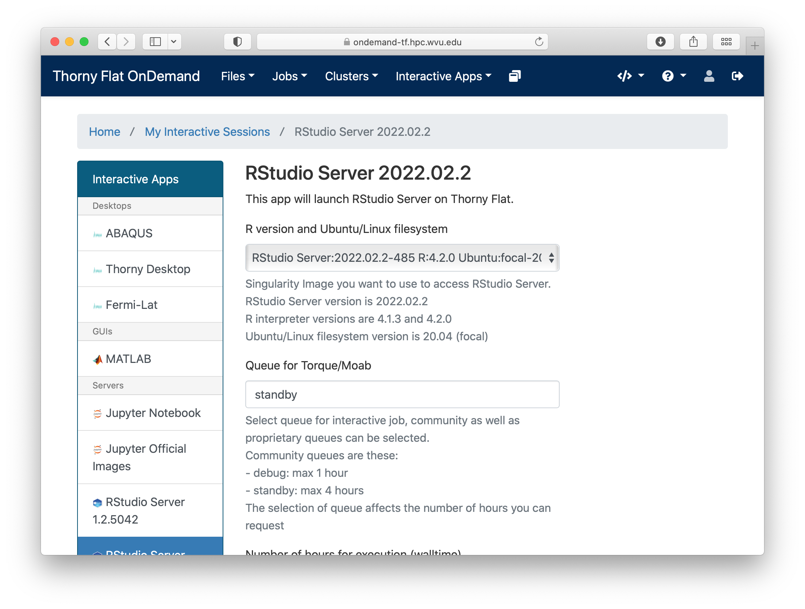
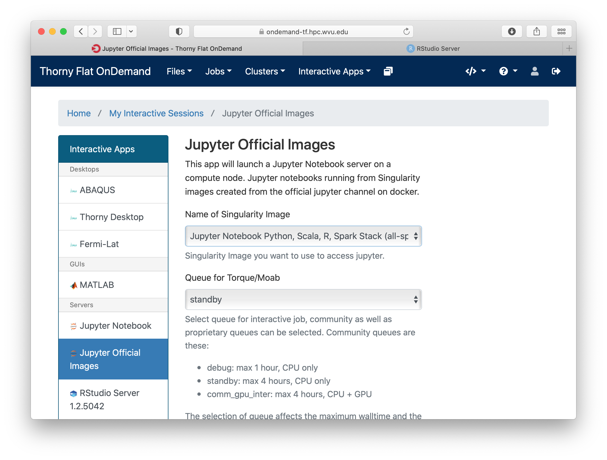

R Language¶
R is a programming language and environment for scientific computing with a particular emphasis on statistical analysis and plotting. The R project is supported by the R Foundation and it is released under a GNU license. The R language itself was created to be similar to the S language and environment which was developed at Bell Laboratories (formerly AT&T, now Lucent Technologies) by John Chambers and colleagues. Originally, R was considered as a different implementation of S, it has since grown into a major environment for statistical computing. There are some important differences with the original S language, but much code written for S runs unaltered under R.
The R source code is written primarily in C and Fortran, with some higher-level pieces of code in R itself. R provides a wide variety of statistical tools such as linear and nonlinear modeling, classical statistical tests, time-series analysis, classification, clustering, and many others. R is capable of publication-ready graphics and is highly extensible. The R language is often the vehicle of choice for research in statistical methodology, and R provides an open source alternative for practitioners of statistical tools and academic research in the area.
R is particularly powerful for several reasons. R has an extensive collection of packages, literally thousands of packages available in the the Comprehensive R Archive Network (CRAN). Another strength is the ease with which well-designed publication-quality plots can be produced, including mathematical symbols and formulae where needed. Great care has been taken over the defaults for the minor design choices in graphics, but the user retains full control.
Although R comes only with a command-line interface (CLI), there are several third-party graphical user interfaces (GUIs). One is RStudio, an integrated development environment (IDE), another being Jupyter, with a notebook interface. We will show here how you can access all those GUI interfaces. But before using GUIs it is important first focus on the basic command line interface (CLI).
The R interpreter and CRAN¶
The R interpreter is the software that allows you to interact with R.
There are two commands in R.
The command R opens a text-based interactive interface, and the command Rscript run scripts written in R language
Around R, a ecosystem of external packages have been delevoped many of them accesible in a repository called CRAN. The Comprehensive R Archive Network (CRAN) is a network of ftp and web servers around the world that store identical, up-to-date, versions of code and documentation for R. On Thorny Flat there is a weekly updated mirror of the CRAN repository located at:
/gpfs/pub/CRAN
There several ways of accessing the different R on our clusters. The Operating System comes with its own installation of R, usually the version is too old for research purposes. There are also environment modules providing compiled versions of R centrally managed along many other scientific software packages. Another alternatve is to use containers, containers are filesystems usually archived on a single file and including all the software needed to run R. Finally, you can create your own conda environments and choose between a variety of R versions. We will explore these options in the contexts of our two clusters: Spruce Knob and Thorny Flat.
Spruce Knob¶
On Spruce Knob, R is preinstalled from RedHat Enterprise Linux (RHEL) repositories. Spruce runs Red Hat Enterprise Linux Server release 6.10 (Santiago). On this Linux distribution, R is included with version 3.0.2. This version is too old for most scientific applications today. You should not have much reason to use that version.
In terms of environment modules Spruce Knob offers three versions: 3.6.3, 4.0.5 and 4.1.2.
You can load any of those modules with the module command:
$> module load lang/R/3.6.3_gcc103
$> module load lang/R/4.0.5_gcc103
$> module load lang/R/4.1.2_gcc103
After that, the command R and Rscript became available on the shell.
The third way of accessing the R interpreter is via a Singularity container.
First, you need to load the singularity environment module:
$> module load singularity
Singularity images are located at /shared/software/containers/ and the variable $SNG_PATH contains this path.
There are two images that include the R interpreter inside:
RStudio-desktop-1.2.5042_R-3.4.4.sif
RStudio-server-1.2.5042_R-3.6.2.sif
Getting shell access to inside any of these containers to access R and Rscript:
$> singularity shell $SNG_PATH/RStudio-server-1.2.5042_R-3.6.2.sif
$> singularity shell $SNG_PATH/RStudio-desktop-1.2.5042_R-3.4.4.sif
Despite including extra software such as RStudio they can be used for their internal R interpreters, especially if you are interested in older versions of R such as 3.4.4.
Thorny Flat¶
On Thorny Flat the R interpreter is not preinstalled from RHEL packages and the only two options are to use the environment modules or using a singularity image. The environment modules for R available on Thorny are:
lang/r/3.6.3_gcc112
lang/r/4.0.5_gcc112
lang/r/4.1.2_gcc112
lang/r/4.2.0_gcc112
To load the module, use the command module load including lang/gcc/11.2 before the module to be added as dependency.
Execute any of the lines below:
$> module load lang/gcc/11.2.0 lang/r/3.6.3_gcc112
$> module load lang/gcc/11.2.0 lang/r/4.0.5_gcc112
$> module load lang/gcc/11.2.0 lang/r/4.1.2_gcc112
$> module load lang/gcc/11.2.0 lang/r/4.2.0_gcc112
After that, the command R and Rscript became available on the shell.
Another option for accessing the R interpreter is via a singularity container. Several images include the R interpreter, in particular, the two images below offer an alternative to equivalent versions from environment modules:
R-3.6.3.sif
R-4.0.5.sif
R-4.1.3.sif
R-4.2.0.sif
To get a shell prompt inside any of those images load the singularity module first:
$> module load singularity
After that, a shell inside the image can be obtained with:
$> singularity shell $SNG_PATH3/R-3.6.3.sif
$> singularity shell $SNG_PATH3/R-4.0.5.sif
$> singularity shell $SNG_PATH3/R-4.1.2.sif
$> singularity shell $SNG_PATH3/R-4.2.0.sif
After getting a shell inside the container the commands R and Rscript became available.
A shortcut to access the R interpreter in one single step is with the run option, for example:
$> singularity run $SNG_PATH3/R-4.2.0.sif
Another way of getting R is using a conda environments.
You can create your own conda environment and install the version of R that better fits your needs.
For example, these are the commands to create a conda environment called R351 with R version 3.5.1 installed from the conda-forge channel.
Load conda module:
$> module load conda
Create a new conda environment, here we are calling it R351 but the name is arbitrary:
$> conda create -n R351
Activate the new conda environment:
$> conda activate R351
And install the version of conda of your preference. To see the list of conda versions execute:
$> conda search -c conda-forge r
And to install a particular version execute:
$> conda install -c conda-forge r=3.5.1
Using R from the Terminal¶
Regardless of how you access R, the R package includes two executables, R and Rscript. The command R is used to start a text-based interactive session, on the terminal execute the command R.

From there you can start typing R commands and getting output interactively:
> 2 + 2
[1] 4
Another way of working in R, and more suited for an HPC environment, is using R scripts.
To do so, first, write your R commands as script in a file. It is customary to add the .R extension to the file. Consider for example a very minimal script, lets create a file hello.R with the content below:
#!/usr/bin/env Rscript
sayHello <- function(){
print('hello')
}
sayHello()
The first line of the file must be #!/usr/bin/env Rscript. This line instructs the shell that this is a R script, meaning that all commands below the first line must be processed by the R internal interpreter.
To make this script like any other executable, we need to change permissions to the file:
$> chmod +x hello.R
The script is ready for execution. As this is such a small program you can run it directly on the head node:
$> ./hello.R
[1] "hello"
However, for large executions, you should always create a submission script and never run numerical intensive operations on the head node.
Create a file runjob.pbs with this content:
#!/bin/bash
#PBS -N MY_R_SCRIPT
#PBS -q standby
#PBS -j oe
#PBS -l nodes=1:ppn=1
cd $PBS_O_WORKDIR
module purge
module load lang/r/4.0.4_gcc102
./hello.R
The name of the job is declared with #PBS -N MY_R_SCRIPT. The queue is declared with #PBS -q standby, for executions that run in less than 4 hours standby is the preferable choice. The line #PBS -j oe joins the error with the output in a single file. The line #PBS -l nodes=1:ppn=1 is asking to run on a single node and using a single core for the execution. In most cases, R runs serially but we will discuss some parallel executions below.
The line cd $PBS_O_WORKDIR``changes the directory to the place where the command ``qsub was executed.
The line module purge``cleans the environment of any modules and ``module load lang/r/4.0.4_gcc102 will load the module for executing R. The name of the module is for Thorny Flat, on Spruce you need to use the modules mentioned above for that cluster.
Finally ./hello.R executes the script and the output will be written in a file like MY_R_SCRIPT.o<JobID> where JobID is a number that identifies the job in the queue system.
The contents of the file are shown below:
$> cat MY_R_SCRIPT.o4714619
[1] "hello"
Installing R Packages as a normal user¶
The system-wide location for installed packages is not writable for normal users. That does not prevent you from installing packages for your usage. Packages installed as user will be installed at $HOME/R/x86_64-pc-linux-gnu-library/<R_VERSION> and will be accessible to you as any system-wide package.
For the versions that we currently have on our clusters, <R_VERSION> could be 3.6 or 4.0.
Packages can only be installed from the head node both on Thorny and Spruce. Compute nodes do not have internet access, so they are not capable to access CRAN from the internet to download any package.
There are two main ways to install R packages from CRAN. You can install packages from inside the interactive R interpreter. Execute the command R and from there install the package with:
install.packages('<Package Name>', repos="file:///gpfs21/pub/CRAN")
Another alternative is using the command Rscript, this time from the normal shell:
$> Rscript -e 'install.packages("<PACKAGE>", repos="file:///gpfs21/pub/CRAN")'
With those commands, you will automatically download the package from CRAN and eventually all dependencies needed for that package. The declaration repos="file:///gpfs21/pub/CRAN" is optional.
Now declaring a URL for downloads and you will get a list of known mirrors where you can download the package.
The local CRAN mirror on Thorny Flat is preferable to install packages from a remote internet server such as:
install.packages('<Package Name>', repos="https://cran.rstudio.com")
With any of those methods, R will automatically detect that you do not have permission to write in the system-wide R library folder and will prompt if you would like to install in a local directory from within your home directory. This folder will also be checked automatically when you run R for packages, allowing you to use anything you already installed.
For example, lets assume that you want to install the package dplyr:
> install.packages("dplyr")
Installing package into ‘/gpfs/home/<username>/R/x86_64-pc-linux-gnu-library/3.6’
(as ‘lib’ is unspecified)
--- Please select a CRAN mirror for use in this session ---
Secure CRAN mirrors
1: 0-Cloud [https] 2: Algeria [https]
...
...
57: USA (CA 1) [https] 58: USA (IA) [https]
59: USA (KS) [https] 60: USA (MI 1) [https]
61: USA (MI 2) [https] 62: USA (OR) [https]
63: USA (TN) [https] 64: USA (TX 1) [https]
65: Uruguay [https] 66: (other mirrors)
Selection: 63
also installing the dependencies ‘backports’, ‘ellipsis’,\
‘digest’, ‘zeallot’, ‘utf8’, ‘vctrs’, ‘cli’, ‘crayon’, \
‘fansi’, ‘pillar’, ‘purrr’, ‘assertthat’, ‘glue’, \
‘magrittr’, ‘pkgconfig’, ‘R6’, ‘Rcpp’, ‘rlang’, \
‘tibble’, ‘tidyselect’, ‘BH’, ‘plogr’
After some downloads and compilations the code will be installed on your local folder $HOME/R/x86_64-pc-linux-gnu-library/3.6
Installing R Packages in non-default directories¶
To use locally installed packages, before you execute R you just need to
modify the R_LIBS environment variable to tell R where to search for
local packages:
$> export R_LIBS=<dir>
Using install.packages()¶
To use install.packages from the R prompt, before you start R you need to modify the R_LIBS environment variable:
$> export R_LIBS=<dir>
Then inside the R prompt, you execute any of the procedures above such as install.packages() inside the R interactive shell.
Manual installation with R CMD INSTALL¶
There is a very manual way of installing packages in R using the command
R CMD INSTALL.
There are several restrictions to use this command:
First, this option only works if you have already downloaded a copy of the package from CRAN, any of its mirrors, or an external site that provides a tar package.
Second, as a normal user, you must specify the path with the -l flag, otherwise, the command will refuse to work as you have no write access to the system-wide location. The command must be used like this:
$> R CMD INSTALL -l <dir> <package_name>
The folder <dir> is the location where the package will be installed and the folder must be created in advance. <package_name> is the name of the package and you must ensure that all dependencies are already installed for the package, meaning that you will have to install several other packages before you can install the package that you want.
Consider for example installing the package parallelly, this package has no dependencies beyond those that already came with the R installation. The sources are available on CRAN and can be downloaded from one of its many mirrors. You can first download the package with:
$> wget https://cran.r-project.org/src/contrib/parallelly_1.24.0.tar.gz
Once the package is downloaded, ensure that the folder where you want to install the software exists, for example, if you want to install packages at
~/R/local_packages, create the folder with:
$> mkdir -p ~/R/local_packages
Finally, install the packages with:
$> R CMD INSTALL -l ~/R/local_packages parallelly_1.24.0.tar.gz
The package is now installed but it can only become visible if you set up the R_LIBS environment for it:
$> export R_LIBS=~/R/local_packages
Finally load the package with:
> library("parallelly")
You need to be careful not to mix R packages created with different major versions of R, those are usually incompatible if you create the package with one version and try to use it with a different version. That is the reason why more automatic installers create separate folders for different R versions.
Graphical Interfaces: RStudio¶
RStudio is a GUI application that allows you to interact with R from a window environment on your computer or a web interface on an HPC cluster. We will demonstrate how to access RStudio on the cluster.
We offer access to RStudio via Open On-Demand. Open On-Demand is web service that offers interactive access to the cluster over internet. A job is created transparently to the user and RStudio can run from a compute node for a certain amount of time.
The first step is to open a web browser on your local computer and go to https://ondemand-tf.hpc.wvu.edu
Once you enter your credentials, you land on the Open On-Demand Dashboard
{kind=link}
{kind=link}
Go to Interactive Apps. There are two versions of RStudio, the older 1.2.5042 and the newer 2022.02.2. They offer different versions of R. Preferentially, select RStudio Server 2022.02.2. A form will be there for filling all the details needed to create a RStudio job.
{kind=link}
{kind=link}
The form ask for the Singularity image that you want to use for launching the server. Several images are presently available built from different versions of Ubuntu as the base filesystem. A good default value could be RStudio 2022.02.2 with R 4.2.0 with Ubuntu focal as base filesystem. The next question is about the queue to run the job. You can get 4 hours using the standby queue and that is a good choice in most cases. The next field is the number of hours to run the job. Using standby, the max walltime is 4 hours, so we use that. Finally the number of cores or processes per node. This is the number of cores reserved on a single compute node, the max number of cores on machines of Thorny is 40 but without special routines (for example Rparallel or sparklyr), R will be running serially, which means that no matter how many cores you ask only one core will be used. We are setting 4 cores in this case. Finally, press Launch to submit the job request.
The next screen will show the job being created for you. After a few seconds, you will see a button Connect to RStudio Server. Press the button.
{kind=link}
RStudio will be running, and showing the IDE interface, from this interface you can execute R commands, see the variables declared and the plots being generated. The interface is very powerful for advanced users of R.

Graphical Interfaces: Jupyter¶
An alternative GUI for R is Jupyter. Jupyter presents a Notebook interface, where there are boxes with code and boxes with text, including titles, subtitles, and even equations.
Go to Interactive Apps and select Jupyter Official Images. A form will be there for filling all the details needed to create a RStudio job.
{kind=link}
{kind=link}
{kind=link}
Select one of the images that include R, one of them is for example r_notebook. The next question is about the queue to run the job. You can get 4 hours using the standby queue and that is a good choice in most cases. The next field is the number of hours to run the job. Using standby the max walltime is 4 hours, so we use that. Finally the number of cores. This is the number of cores to use on the compute node, the max number of cores on one machine on Thorny is 40 but without special routines, R will be running serially, which means that no matter how many cores you ask only one core will be used. We are setting 4 cores in this case. Finally, press Launch to submit the job request.
The next screen will show the job being created for you. After a few seconds, you will see a button Connect to Jupyter. Press the button.
{kind=link}
Jupyter will be running, and showing the Jupyter File Manager interface, from the manager you select New >> R and another tab on your browser will open with the Jupyter Notebook running a R kernel.
From this interface you can execute R commands, commands can be entered in the boxes and executed with SHIFT ENTER. Boxes can also serve for text including titles, subtitles and text with equations.

Parallel Computing with R¶
By default R only uses one core, which is a big limitation when dealing with large amounts of data or complex calculations. However, R includes by default the parallel package which is the foundational tool for parallel computing in R. There are several other third-party tools for parallelism but we will be focusing on the tools available on any R installation.
The parallel package came installed by default on all modern versions of R. The package needs to be loaded before use with:
> library("parallel")
Once the library is loaded several routines became available that are able to take advantage of share memory systems, on machines such as Thorny, most compute nodes have 40 cores, however it is up to you to indicate the number of cores that you want to use and that should match the amount of resources that you requested via your submission script or your interactive job.
The first function that we will use from parallel is detectCores(). The function will return the total number of cores on the compute node, not the total number of cores that you requested for the job:
> detectCores()
[1] 40
The parallel package offers a number of functions that replace the serial versions of Apply functions such as lapply, sapply and apply. The parallel replacements being parLapply, parSapply and parApply.
To use any of those functions we need first to create a cluster and internal structure for the parallel package that instructs the number of cores that can be used when parallelizing the apply functions.
The function makeCluster() will create a cluster. If you have created a job asking to use 4 cores, you can create a cluster with 4 cores like this:
> cl <- makeCluster(4)
> cl
socket cluster with 4 nodes on host ‘localhost’
Now with the cluster cl we can execute any of the alternative versions of apply functions:
> ans <- parLapply(cl, 1:10000000, function(x) sqrt(x^(1/3)) + sqrt(x^(1/2)))
This function will apply function(x) as it was defined for the first 10 million positive integers returning a vector of equal number of floats stored in ans.
To compute this function R will be using a cluster build from 4 execution instances and will take a fraction of the time compared with the serial version of lapply. We can see some timings here:
> system.time(parLapply(cl, 1:10000000, function(x) sqrt(x^(1/3)) + sqrt(x^(1/2))))
user system elapsed
1.787 0.093 3.721
> system.time(lapply(1:10000000, function(x) sqrt(x^(1/3)) + sqrt(x^(1/2))))
user system elapsed
6.484 0.023 6.522
We got almost an execution that was almost 4 times shorter than for the serial case. It is never the case that we get a perfect scaling, in more practical cases you should always expect that some time is lost in communication and extra overhead in orchestrating the parallel execution. The parallel versions of apply functions are an easy way of taking advantage of multicore architectures present of modern computers.
At the end of execution is always important to close the cluster with the stopCluster function:
> stopCluster(cl)
You should always stop the cluster to free resources. In more practical scenarios you should always ensure that stopCluster is called no matter if the function fails for some reason. For doing that you can use the on.exit() function:
simulate <- function(ncores) {
cl = makeCluster(ncores)
on.exit(stopCluster(cl))
# The core of the function belows
}
Using Fortran inside R¶
R itself is not a fast language. Speed is not the designed goal of the language. The goal is to create a tool that makes data analysis and statistics easier for people who uses those tools. In many cases practitioners of statistical tools are not programmers, the are not planning to create the fastest code, they just need to have the analysis done and move on. R is slow compared to other programming languages, and sometimes users who are not very attentive to good programming best practices usually make things worse, however, for many purposes, R is fast enough.
People with knowledge on programming could improve the performance of R by executing numerical intensive operations on a different language retaining the advantages of working for most part on a high level language like R.
We will demonstrate how to achieve that with a code written in Fortran. Fortran is a low level language. A low level language uses an explicit compiler, a program that converts the source code into code that the computer can execute.
Consider the following Fortran code (facto.f90):
!
! simple subroutine to compute factorial
!
subroutine facto(n, answer)
integer n, answer, i
answer = 1
do i = 2,n
answer = answer * i
end do
end subroutine
This routine in fortran computes the factorial of a number n and return the result in the variable `answer.
We can compile this file with the GNU fortran compiler called gfortran:
$> gfortran -c facto.f90
The result of the compilation is a file called facto.o. The next step is to create a shared library from this function:
$> gfortran -shared -o facto.so facto.o
The resulting file is facto.so that can be imported from R and used (R Terminal):
> dyn.load("facto.so")
> .Fortran("facto",n=as.integer(40),answer=as.numeric(1.0))
$n
[1] 40
$answer
[1] 8.159153e+47